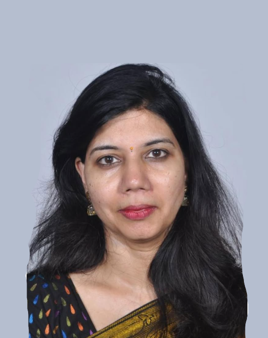

Teaching style
Interactive explanations with the most relatable examples
Assessment approach
Regular tests to consistently evaluate student performance
Parent communication
Results shared promptly through respective WhatsApp groups
Faculty
Experienced mentors who care deeply about every learner.
Maths, Physics & Biology (9th and 10th) Faculty
Mr. Manish Khandelwal
With 20+ years of teaching experience, Mr. Manish Khandelwal is known for explaining Maths and Physics in the most interactive way possible. He also teaches Biology for classes 9 and 10. His classes are full of relatable examples that help students connect concepts with everyday life and learn in the best possible way.

Chemistry Faculty
Mrs. Swati Jain
Mrs. Swati Jain leads Chemistry with warmth, passion, and unwavering determination. Her commitment to teaching inspires students to stay curious, work consistently, and gain a strong grasp of the subject.
Programs
Structured support for students from middle school to senior secondary.
Concept-first foundation building
Students strengthen core understanding in Maths, Physics, and Chemistry, with Biology support by Manish sir for classes 9 and 10, so future classes feel less stressful and more manageable.
Focused preparation with deeper problem-solving
Higher classes receive subject-specific support that sharpens concepts, builds exam confidence, and improves consistency.
Tests that track growth continuously
Frequent assessments help identify strengths and improvement areas early, so progress remains visible and actionable.
Why M.S Tuition
Everything is designed to help your child learn better, perform better, and feel more confident.
Relatable teaching methods
Concepts are connected to practical, day-to-day examples so students remember what they study.
Personal attention
Students receive guidance that helps them clear doubts, strengthen weak areas, and stay motivated.
Consistent parent updates
Test results are shared in the respective WhatsApp groups to keep families informed of progress.
Experience you can trust
With seasoned faculty and a learner-focused approach, students study in a disciplined yet encouraging environment.
A Note From The Seniors
Words from students who spent meaningful years learning at M.S Tuition.
The two years that I spent at MS were the best years of my life. In these years I learnt not only through books and cramming methodologies; the excellent teachers inculcated in us the values of life and helped develop a scientific and logical aptitude towards problems. Bravo!
My experience at MS was really good. I studied there for two years in Class 9 and 10, and it genuinely helped me improve my grades and overall performance. Both teachers were extremely supportive, and their teaching styles were top-notch. I highly recommend my juniors to join MS; it is a great place to study and improve.
My experience at MS Tuition during the 2025-26 Class 10 batch was really great. Manish Sir explains concepts using very relatable examples, which made everything easy to understand and helped make my concepts crystal clear. The regular tests were also very helpful, as they allowed me to track my performance and improve consistently.
I joined MS Tuition in 9th grade, and it helped me understand every inch of the syllabus right till class 10th. Their practical approach and real-life examples stay in your mind when cramped text slips away. The mentorship is excellent. Manish Sir's consistent effort, designing daily assignments and evaluating test series for parents to also improvise, is truly commendable. Swati Mam's passion and dedication make her a fabulous Chemistry teacher. I'm forever grateful for the constant support, even right up to those late-night motivational messages before boards. I can't wait to see the results of the knowledge I've gained here!
Studying grade 10th in MS was the best decision I took in my academic life till now. Manish Sir and Swati Mam were a source of continuing support and unwavering determination. They always supported me in my ups and downs. Overall, this institute not only provided me with a thorough knowledge of Maths and Science but played a key role in my holistic growth and development.
Contact Us
9950525548, 9829433679
Reach out to M.S Tuition for class details, subject guidance, and admission-related information for classes 8 to 12.